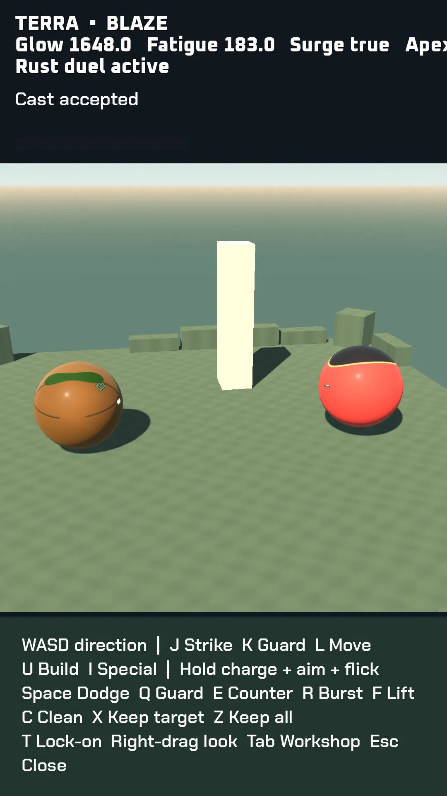

Kept builds survive a fresh world
The latest scripted control test now keeps a real, surviving stone build. The player targets it, pays once, and a repeated Keep action spends nothing extra. Clean leaves that paid kept build intact without issuing a refund.
A fresh session loads the saved build with the same ownership, paid status, position and dimensions. It also appears in the game scene. This closes the earlier test gap where Keep had affected no surviving build.
The native input, placement and world-load checks finish without engine errors. Contact records retain their original events and complete resolution checkpoints. Surface effects still need care: a projection onto the mesh before its shader runs is not an exact physical surface hit.
The first recorded native interaction is next. Hands-on testing remains blocked by a blank game window and an error dialog, and the reference fight still needs stronger contact composition. These scripted results do not approve the game or any milestone; the gallery remains empty.
Inside the work

